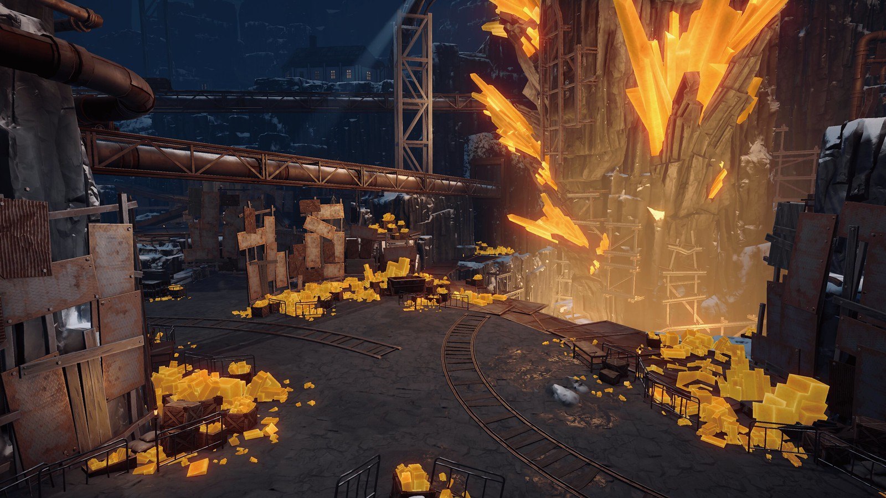

Ciudad Exterior

La parte de Belobog que se encuentra en la superficie se conoce como el Mundo Exterior y es la principal zona gobernada por La Unión. La temperatura en la ciudad es constante como la de la primavera. Como pueblo fiel a Plamya, los residentes del Mundo Exterior viven una vida pacífica y feliz bajo bendiciones y protección.
Bajo Mundo

La parte de Belobog que se encuentra bajo tierra se conoce como el Bajo Mundo. Cuenta la leyenda que cuando el Frío Eterno sepultó el mundo, las fisuras del Fragmento crecieron y erosionaron la realidad en el subsuelo.